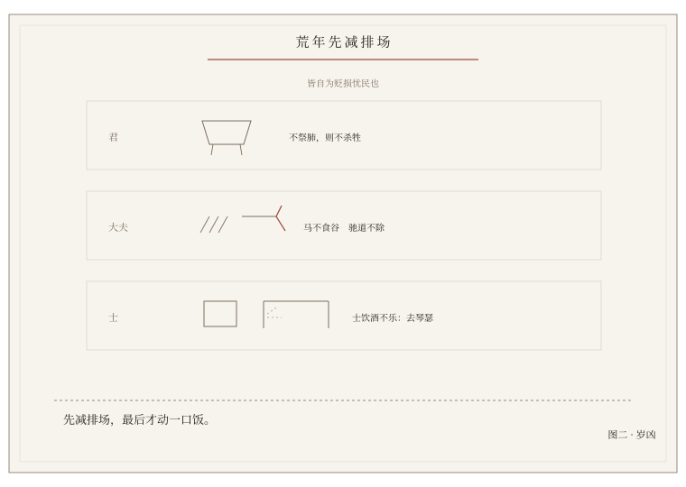

曲礼下 · 二·三十二 · 第 155 课
年成不好：君的美食不祭肺（不杀牲），马不吃谷，驰道不修，祭事不用钟磬，大夫不吃粱，士饮酒不奏乐。注「皆自为贬损忧民也」。
说什么事：岁凶，年谷不登，君膳不祭肺，马不食谷，驰道不除，祭事不县，大夫不食粱，士饮酒不乐。
落在哪一层：礼。论凶年自上而下的自贬，六事一节。
为何编在此位：上节说春天少取，此节说荒年先减自己的用度。一节说取，一节说省。
【经】歲凶，年穀不登。君膳不祭肺，馬不食穀，馳道不除，祭事不縣，大夫不食粱，士飲酒不樂。
【注】皆自為貶損憂民也。《禮》：食殺牲則祭先，有虞氏以首，夏后氏以心，殷人以肝，周人以肺。不祭肺，則不殺也。天子食，日少牢，朔月太牢。諸侯食，日特牲，朔月少牢。除，治也。不治道，為妨民取蔬食也。縣，樂器鍾磬之屬也。粱，加食也。不樂，去琴瑟。
【疏】此下明凶荒人君忧民自贬退礼也。「岁凶」者，谓水旱灾害也。「年谷不登」者，岁既凶荒，而年中谷稼不登。登，成也。郑注《太史职》：「中数曰岁，朔数曰年。」「君膳不祭肺」者，膳，美食名。夫盛食必祭，周人重肺，故食先祭肺。岁既凶饥，故不祭肺，则不杀牲也。「马不食谷」者，年丰则马食谷，今凶年，故不食也。「驰道不除」者，驰道，正道，如今御路也。……「祭事不县」者，祈祷之祭则不县乐器也。「大夫不食粱」者，大夫食黍稷，以粱为加，故凶年去之也。「士饮酒不乐」者，士平常饮酒奏乐，今凶年，犹许饮酒，但不奏乐也。君尊，故举不杀牲及不县之等大者而言；大夫士卑，直举饮酒之小者言耳。
岁凶 疏「水旱灾害」。凶在岁，不在人。
年谷不登 登，成也。谷不成，故无收。
膳不祭肺 周人食先祭肺。不祭肺，即不杀牲。疏「不祭肺，则不杀也」。
驰道不除 除，治也。不修整道路，为不夺民力以取蔬食。
祭事不县 县，悬也，钟磬之属。祭虽行而不用乐。
粱 加食。疏「大夫食黍稷，以粱为加」。
年岁凶荒，谷物不熟：君的美食不祭肺，马不喂谷，驰道不修整，祭祀不用钟磬，大夫不吃粱，士饮酒不奏乐。
凶年不是一道诏令减税就算完。此节所记，是自上而下一层层地减自己的口与耳：君减牲、减乐、减修路，大夫减加食，士减乐。省下来的不是钱，是让人看见——上头也在挨。
第一层 祭先之制 注列四代祭先之物：有虞氏以首，夏后氏以心，殷人以肝，周人以肺。祭肺即杀牲之证；不祭肺，便是不杀。此节第一事，落在「不杀」二字上。
第二层 省在何处 马不食谷，省的是畜；驰道不除，省的是役；祭事不县，省的是乐。三者都不是自己的口腹，而是排场与工役。礼先减排场，后减口腹。
第三层 犹许饮酒 士凶年仍可饮酒，只是不奏乐。疏说得明白：「犹许饮酒，但不奏乐。」礼不在禁绝人情，只在收去那层装饰。
第四层 君举大、臣举小 疏「君尊，故举不杀牲及不县之等大者而言；大夫士卑，直举饮酒之小者言耳」。同一件事，记在谁身上，轻重不同。这是《礼记》的记法，也是读法。
与今日何干 灾年，先减仪式、先减工程、先减排场；人的一口饭，最后才动。
| 左 | 右 |
|---|---|
| 岁凶，年谷不登 | 水旱之灾，谷不成 |
| 君膳不祭肺 | 不祭肺即不杀牲 |
| 马不食谷 | 省畜 |
| 驰道不除 | 省役，不妨民取蔬食 |
| 祭事不县 | 祭行而不用钟磬 |
| 大夫不食粱 | 去加食 |
| 士饮酒不乐 | 犹许饮酒，但不奏乐 |
| 君举大、臣举小 | 记法即读法 |
画一座自上而下分三层的台：上层一只鼎（无火、无烟），中层一束草料与一条断了的路线（线中断一道口子），下层一只空杯与一张无弦的琴身（只画琴的轮廓、弦位留白）。三层由一条细竖线贯穿，层与层之间以极淡横线分隔。不写文字、不画人。赭色只用在最上层那只鼎的足上。
